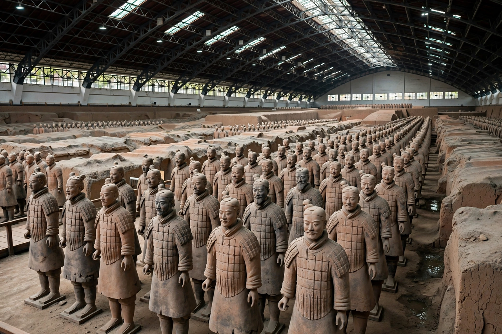

Qin dynasty

Terracotta Army soldiers in formation in the pits near Xi'an
The Qin dynasty (221–206 BC) was the first imperial dynasty of China, founded by Qin Shi Huang, who ended the Warring States period and unified China in 221 BC. Though it lasted only fifteen years and collapsed soon after its founder's death, the Qin gave China its name in Western languages and set enduring patterns: centralised bureaucracy, standardised script, coinage, weights, measures and axle widths, and great public works including the first Great Wall linking earlier frontier walls and the emperor's mausoleum guarded by the Terracotta Army.
Unification and reform
The state of Qin, guided by Legalist ministers, conquered its six rivals between 230 and 221 BC. The First Emperor abolished feudal enfeoffment in favour of commanderies governed by appointed officials, standardised the small-seal script, unified currency to the round banliang coin, and burned books of rival schools (213 BC) — an act remembered as a symbol of tyranny. Hundreds of thousands of conscripts built roads, canals, palaces and the northern wall.
Fall
Qin Shi Huang died in 210 BC while touring the empire; the eunuch Zhao Gao and chancellor Li Si concealed his death and installed the pliable Huhai. Rebellions erupted within a year; the rebel leader Liu Bang took the capital in 206 BC, and his rival Xiang Yu looted and burned it. Liu Bang founded the Han dynasty, which kept most Qin institutions while softening their harshness.